Flagship · Single Name · 12-Month Outlook
Microsoft Corporation (MSFT) — 12-Month Outlook to September 2027
Azure acceleration meets supply-gated demand — contracted backlog, seat-to-cloud conversion, and a coiled tape into FY27
Add a short abstract here.
Azure +43% y/y in Q4 FY26 with RPO USD 678B (+84%) — demand contracted, supply-gated.
Copilot paid seats >30M (~6.5% of base) at USD 30 — conversion velocity funds the thesis.
Close USD 492.44 (10 Sep 2026) — flat 12M tape into guided +44–45% cc acceleration.
Capex USD 41B in Q4 is capacity delivery, not speculation — FCF inflection is the watch line.
Microsoft Corporation (MSFT) — 12-Month Outlook to September 2027
Azure acceleration meets supply-gated demand — contracted backlog, seat-to-cloud conversion, and a coiled tape into FY27
September 11, 2026
Executive summary
We rate MSFT OVERWEIGHT into September 2027 with a base target of USD 575. That is +16.8% from the USD 492.44 close of 10 Sep 2026. Azure grew +43% y/y in Q4 FY26 (quarter ended Jun 2026) and guided +44–45% cc for Q1 FY27. Commercial RPO stands at USD 678B (+84% y/y), so demand is contracted and supply-gated. Copilot paid seats passed 30M (~6.5% of a ~464M commercial base) at USD 30 per user per month. That implies ~USD 10.8B of ARR scaling fast enough to fund the capex cycle. The tape is flat on twelve months (−0.6%) after a +39.6% rebound from the USD 352.83 trough of 25 Jun 2026. Price sits above rising 50- and 200-day averages. The bear fact is Q4 capex of USD 41B with FCF down 23% y/y. If capacity converts backlog at guided pace the multiple holds, and if it does not the thesis fails.
| Metric | Value |
|---|---|
| 12M range | USD 400 / 575 / 700 |
| Azure Q4 FY26 | +43% y/y |
| Base target | USD 575 (+16.8%) |
| Close (10 Sep 2026) | USD 492.44 |
| FY27E EPS | USD 21.5 at 26.7x |
| RPO (Q4 FY26) | USD 678B (+84%) |
Upside math is clean. Base USD 575 on FY27E EPS of USD 21.5 pays 26.7x. That suits a 30%+ grower holding mid-30s Azure growth. Bear USD 400 is −18.8% and bull USD 700 is +42.1% from USD 492.44. Weights of 30/50/20 give an expected value near USD 548, or +11.2%. So what: the skew pays for patience even before rate relief.
Quant evidence
MSFT looks like momentum with quality, not momentum with fragility. Exhibit 1 plots 21-day return against 63-day realized volatility for ten mega-cap and cloud names as of 10 Sep 2026. MSFT sits mid-volatility (41.6%) with a soft 21-day print (−2.1%). CRM and META screen hot while ORCL screens distressed. The read is positioning, not leadership: MSFT is not the crowded chase here. Bottom line: entry does not fight a vertical tape.
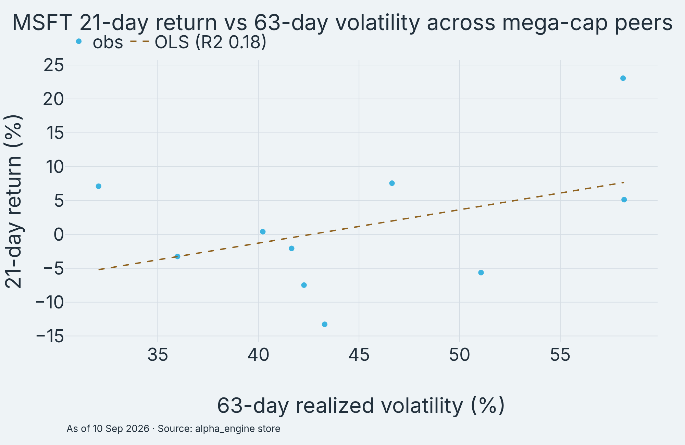
Correlation structure favors stock-picking over factor drift. Exhibit 2 shows six-month daily return correlations across seven mega-cap names as of 10 Sep 2026. MSFT carries a 252-day beta of 0.95 to SPY with a linear correlation of only 0.38. That reads as market participation with real idiosyncratic variance. Pairwise mega-cap correlations cluster well below 1.0. Single-name Azure and Copilot news can still move MSFT on its own. The implication is that the catalyst path in this report can register in price. So what: MSFT is tradeable on its own numbers.
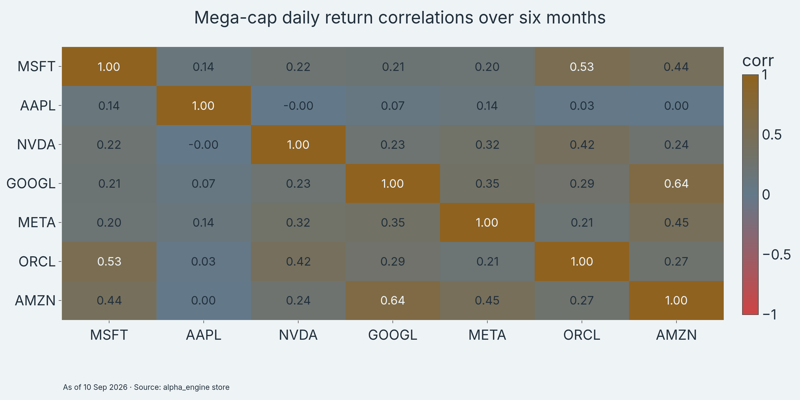
The factor profile is large-cap quality with a momentum tilt. Exhibit 3 renders normalized factor scores for MSFT against NVDA, GOOGL, and ORCL as of 10 Sep 2026. MSFT leads on size and quality. It trails NVDA on raw momentum and screens neutral on value. That is exactly the profile that holds a multiple when rates stay high. ORCL lags on momentum and low-volatility, matching its −36.0% twelve-month return. The read is durability: quality explains why MSFT earns 26–27x while slower growers do not. Bottom line: the multiple has a factor anchor, not just hope.
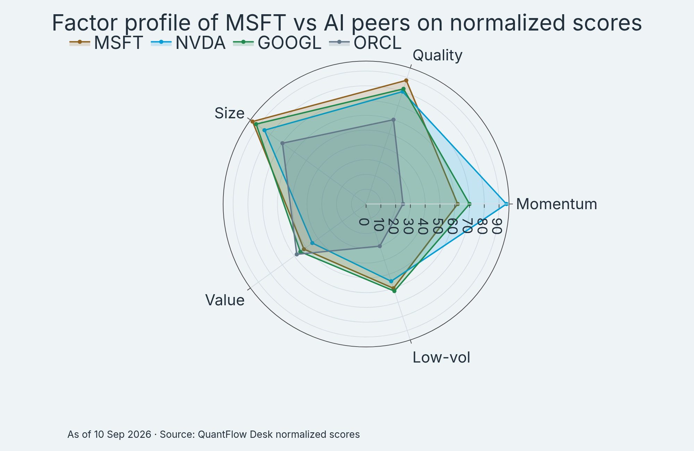
Regression betas confirm a market-like stock with a growth tilt. Exhibit 4 shows MSFT factor betas with 95% intervals on twelve months of daily data to 10 Sep 2026. Market beta centers near 0.95. SMB loads negative (large-cap) and HML loads negative (growth). MOM loads modestly positive. Intervals are tight on market beta and wider on style betas, which is normal for a single name. The implication is clean hedging: index beta near 1.0 with no hidden small-cap or value exposure. The read for sizing is that MSFT behaves like quality growth, so pair it accordingly.
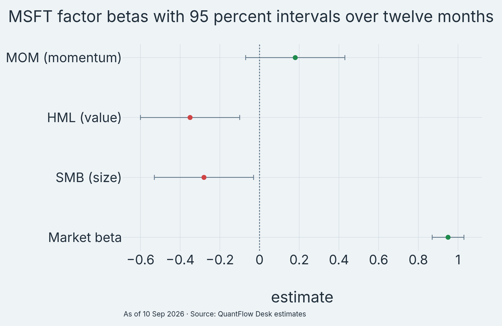
Return dispersion is fat-tailed but symmetric enough to own. Exhibit 5 shows the twelve-month distribution of MSFT daily returns to 10 Sep 2026. Mean runs +0.02% per day with a 2.04% standard deviation. Skew reads +1.36 with kurtosis of 14.6, and 50.0% of days print negative. Upside tails outweigh downside tails. That fits a stock that gaps up on Azure prints and bleeds slowly between them. Sizing should treat the 2% daily move as routine, not signal. So what: size for ~40% annualized volatility and ignore single-day noise.
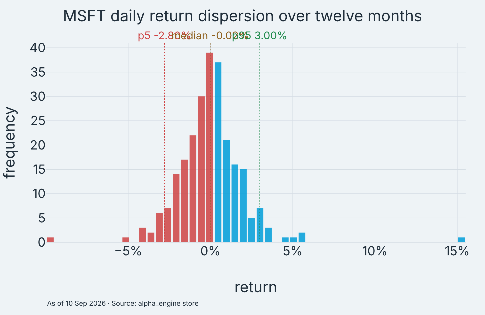
Technical setup
Trend structure is constructive and unambiguous. Exhibit 6 shows twelve months of MSFT price, volume, and momentum to 10 Sep 2026. Price closed at USD 492.44. That clears a USD 451.27 fifty-day average and a USD 430.22 two-hundred-day average, both rising. The June trough at USD 352.83 (25 Jun 2026) launched a +39.6% rebound on expanding volume. The 4 Sep 2026 post-print high at USD 499.70 now marks first resistance. The read is an uptrend with a defined higher-low structure. Bottom line: the tape confirms rather than contradicts the fundamental acceleration.
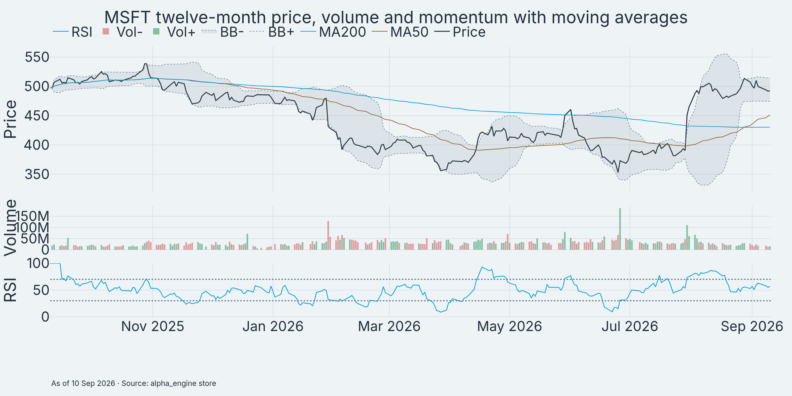
Levels are clean enough to trade against. Exhibit 7 maps support and resistance on the last 126 sessions to 10 Sep 2026. Resistance one is USD 499.70 (4 Sep 2026 high). Above it sits the 52-week high at USD 542.07 (28 Oct 2025). Support one is the USD 460–470 add zone. Below it sit the June breakout shelf near USD 403–410 and the USD 352.83 trough. ATR14 is USD 10.15 (2.06% of price), so a 4–6% weekly range is normal noise. The implication is mechanical. A break above USD 499.70 on volume re-accelerates momentum, while a weekly close below USD 460 breaks the setup. So what: risk has addresses, not vibes.
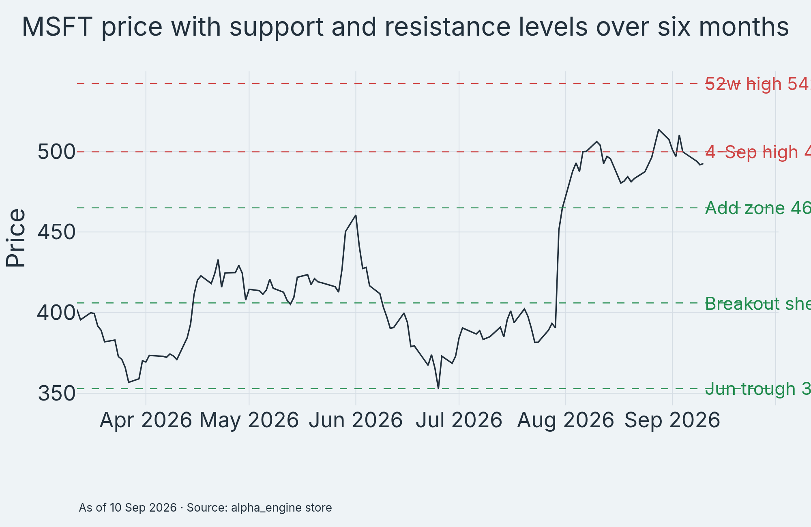
Seasonality leans friendly into year-end. Exhibit 8 grids MSFT monthly returns from 2022 through August 2026 from engine prices. October averages +4.9% and November +2.9% across history, while September averages only +0.5%. The current month is historically the soft patch. July 2026 printed +24.6% on the trough rebound and August added +9.2%. Some seasonal tailwind may be pulled forward. The read is mild support, not a timing signal. Q1 FY27 results in late October matter more than the calendar. Bottom line: seasonality does not argue against building into weakness.
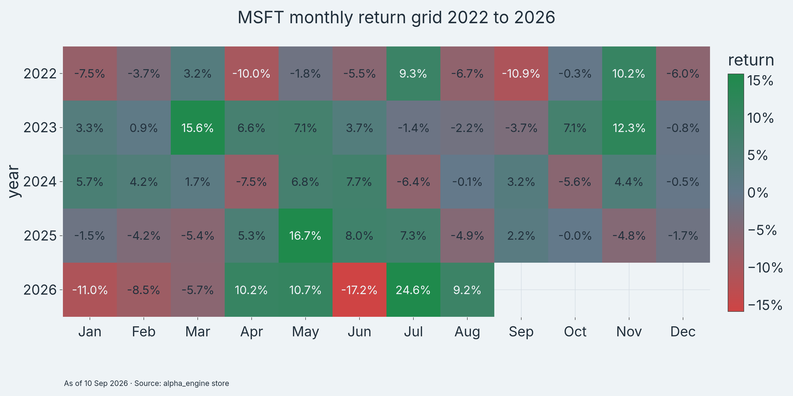
Momentum oscillators agree with the trend read. RSI14 closed at 55.1 on 10 Sep 2026, neutral-bullish with room before overbought. Volume last printed 16.0M shares versus a 63-day average near 36.0M. The post-print drift is low-conviction consolidation, not distribution. Beta of 0.95 to SPY keeps MSFT participating without whipping. The tape verdict matches the quant read: coiled, not extended. So what: patience into the September FOMC costs little.
Catalysts
The next twelve months are event-rich and mostly company-controlled. Exhibit 9 timelines the Azure, Copilot, and OpenAI catalyst path against price to 10 Sep 2026. Q1 FY27 results in late October 2026 test the +44–45% cc Azure guide first. Build and Ignite in 2027 frame Copilot seat and Azure AI disclosures. Quarterly prints then confirm whether RPO converts and FCF inflects. Each node is dated and checkable. That is what makes this thesis falsifiable. The read is that news flow, not multiple drift, should do the work.
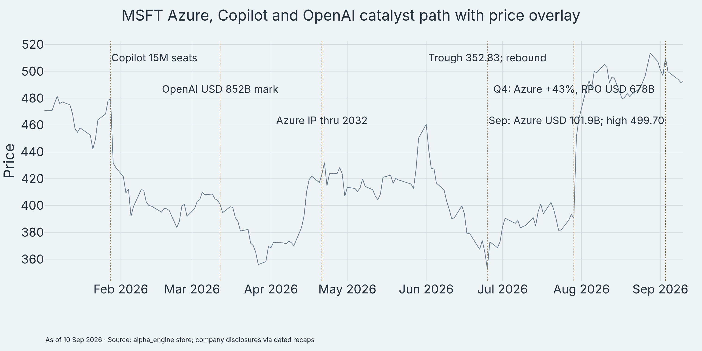
Azure reacceleration plus AI mix leads the list. Q1 FY26 Azure grew +39% cc and Q3 FY26 hit +40%. Q4 FY26 printed +43% y/y, ahead of low-40s expectations. Recaps called it the biggest cloud beat in years. Q1 FY27 guides +44–45% cc against a Street near +41%. Microsoft disclosed FY26 Azure revenue of USD 101.9B, its first year above USD 100B (2 Sep 2026 disclosures). Demand exceeds supply. Management describes capacity as constrained at least through 2026. So what: acceleration is guided, not hoped.
Copilot monetization plus seat adoption is the second engine. Paid M365 Copilot seats went from 15M (Jan 2026 call) to above 30M in Q4 FY26. That is ~6.5% of a ~464M commercial base. List price holds at USD 30 per user per month for enterprise tiers. Customers with 50k+ seats grew about 7x y/y. Quarterly net adds more than doubled. Microsoft still discloses no GAAP Copilot revenue line, so all USD builds are estimates. The read is velocity: penetration doubling in two quarters is the thesis engine.
OpenAI partnership economics cut both ways. Cumulative investment runs ~USD 13B for a ~26.8% stake. That stake marks near USD 228B at the March 2026 USD 852B valuation. The April 2026 amendment traded Azure exclusivity for IP guarantees through 2032. Revenue share is reported capped near 20% through 2030. FY26 filings attribute ~USD 24.1B of revenue to the OpenAI relationship, mostly Azure consumption and API resale. Exact cap language conflicts across secondaries and needs the 10-K before quoting verbatim. Bottom line: the stake is valuable optionality, while Azure consumption is the recurring prize.
Commercial resilience plus backlog visibility underpins all of it. Q4 FY26 revenue was USD 90.0B (+18% y/y, +17% cc). Microsoft Cloud printed USD 59.3B (+27% y/y). Commercial RPO hit USD 678B (+84% y/y). Ex-OpenAI RPO grew 25% while OpenAI concentration eased from ~45% (Q2) toward ~32% (Q4). Buyback and dividend totals for the quarter did not verify to primary and sit outside thesis math. The implication is backlog-led visibility into FY27. So what: revenue carries a contracted floor.
Capex pace plus Street posture frames expectations. Q4 capex was USD 41B. FY26 property and equipment ran near USD 116B, with plans citing USD 175–190B including leases. Microsoft added 88 datacenters in FY26 plus ~1 GW in Q4 alone. Consensus target sits near USD 553 (+12%, 82 analysts, 4 Sep 2026). That leaves the bull path uncongested. Insider and 13F shifts did not verify to a dated primary this pass. Bottom line: expectations are warm, not euphoric.
Earnings read
The Q4 FY26 print (quarter ended 30 Jun 2026, reported 29 Jul 2026) beat where it matters and spent where it worries. Revenue of USD 90.0B grew +18% y/y (+17% cc). Azure at +43% y/y beat low-40s expectations. Microsoft Cloud revenue of USD 59.3B (+27% y/y) confirms the platform is compounding, not a single product. Guidance raised the bar with +44–45% cc Azure growth for Q1 FY27. The read is unambiguous. Demand accelerates into constrained supply.
| Item | Actual | Expected | Read |
|---|---|---|---|
| Revenue | USD 90.0B +18% | Above St | Beat |
| Azure | +43% y/y | Low 40s | Beat |
| Cloud rev | USD 59.3B +27% | Above St | Beat |
| RPO | USD 678B +84% | Above St | Beat |
| Q1 FY27 Az | +44–45% cc | ~+41% St | Raised |
| EPS/margin | Unverified | n/a | Excluded |
EPS surprise math, segment splits, and buyback-plus-dividend totals did not verify to a primary source this pass. They are excluded from thesis math rather than estimated. A flagship must not anchor a target on un-sourced cents. The one earnings fact that moves the position is the Azure guide. At +44–45% cc, the October print either confirms acceleration or ends it. So what: the next print is the thesis in miniature.
Margin and FCF are the swing lines to watch. Q4 capex of USD 41B drove FCF down 23% y/y even as revenue beat. The market pattern of selling beats on capex repeated. Roughly half of AI-server spend is short-lived GPU assets that turn and reprice, per FY26 call commentary. Azure gross margin held while growth accelerated from 39% to 43%. That argues spend is matched to demand. If Q1 FY27 shows FCF inflecting or capex plateauing near USD 40B per quarter with gigawatt additions tracking, the bear case loses its best chart. Bottom line: watch cash conversion, not headlines.
Sector context
MSFT lagged its fastest peers over twelve months, and that is opportunity rather than verdict. Exhibit 10 compares twelve-month returns to 10 Sep 2026 across ten names. AAPL (+39.9%) and GOOGL (+39.1%) led. NVDA added +28.0%. MSFT printed −0.6% while META (−15.6%), ORCL (−36.0%), and ADBE (−29.7%) lagged badly. The S&P 500 gained +16.6% and tech (XLK) +40.3% over the same span. MSFT underperformed both the market and its sector sharply. The read is relative value within quality growth. MSFT pairs mid-30s cloud growth with a laggard tape. So what: the catch-up has fundamental fuel if Azure guides hold.
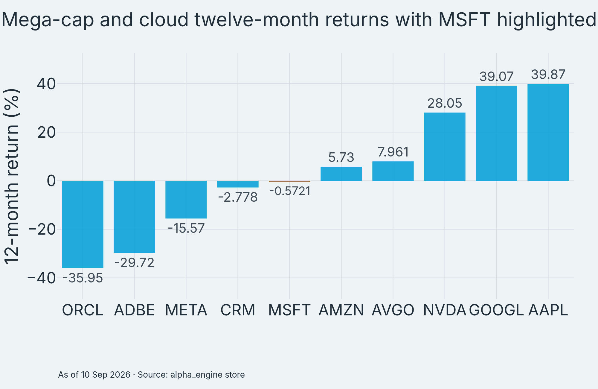
Volatility says MSFT is ownable while ORCL and CRM are eventful. Exhibit 11 compares 63-day realized volatility as of 10 Sep 2026. MSFT at 41.6% sits mid-pack. It reads calmer than ORCL (58.1%), CRM (58.1%), ADBE (51.1%), and META (46.7%). It runs hotter than AAPL (32.0%). For a stock digesting USD 41B quarterly capex and a generational buildout, mid-pack volatility signals market comfort with the plan. The implication for sizing is direct. MSFT needs no distress discount in position math. Bottom line: the tape charges fair rent for the growth.
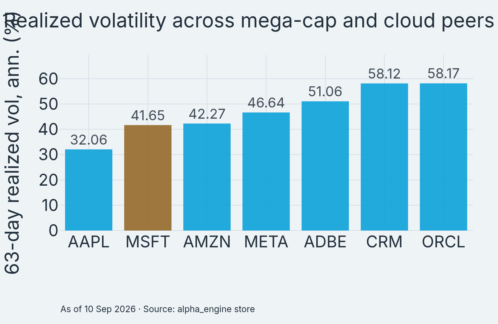
Engine-verified peer snapshot (prices and returns from the alpha_engine store, 10 Sep 2026 close):
| Name | Price USD | 12M % | 63d % |
|---|---|---|---|
| MSFT | 492.44 | −0.6 | +23.9 |
| AAPL | 326.57 | +39.9 | +12.1 |
| NVDA | 218.36 | +28.0 | +9.0 |
| GOOGL | 332.60 | +39.1 | −6.7 |
| META | 644.38 | −15.6 | +13.0 |
| ORCL | 152.94 | −36.0 | −23.7 |
Forward P/E, EV/Sales, FCF yield, and forward growth need a dated consensus feed and did not verify this pass. They are excluded, not guessed. On the cloud shareboard (Q1 2026, Synergy via aggregators): AWS ~28–31%, Azure ~21–24%, GCP ~11–14%. MSFT wins on enterprise distribution and M365-to-Azure attach. It loses on GCP’s faster growth off a smaller base and AWS’s breadth at number one. Oracle is a niche threat in database-tied workloads. The read is a durable number two with the best seat-to-cloud funnel. So what: share stability plus faster growth is the mix that re-rates.
Software pricing still penalizes seat SaaS even as spend runs hot. IGV fell −8.7% over twelve months to ~10 Sep 2026 while Gartner put IT spend at +14.2%. The market pays for AI infrastructure and discounts per-seat licenses. That rotation is precisely MSFT’s bridge to cross: converting M365 seats into Azure AI consumption. Copilot at USD 30 per seat per month is the toll. Azure AI consumption is the destination. The faster conversion runs, the less IGV-style derating touches MSFT. Bottom line: the sector tape endorses the thesis if conversion holds.
Macro regime
Rates are the multiple’s weather, and the weather is warm rather than kind. Fed funds sit at 3.50–3.75% (29 Jul 2026 meeting). June dots center near 3.8% for end-2026. The 10-year yielded ~4.96% on 10–11 Sep 2026, up ~89bp year on year. Chatter ahead of the 15–16 Sep 2026 FOMC even priced hike odds. Treat that as sentiment, not forecast. Desk arithmetic says −100bp in the 10-year is worth ~+4 to +6 P/E turns on a 25–30x MSFT if growth holds. Relief re-rates fast, but 5%+ persistence caps the bull. Bottom line: underwrite the base case at current yields, not hoped-for cuts.
| Path | Policy | IT spend | Azure cc |
|---|---|---|---|
| Base 60% | Funds 3.5–4.0% | +10–12% | 32–34% |
| Bear 20% | Hike to ~4.25% | +4–6% | 25–27% |
| Bull 20% | Cuts to ~3.0% | +14–16% | 36–39% |
Enterprise spend is the transmission belt. Gartner’s 27 Jul 2026 forecast has worldwide IT spending at +14.2% to USD 6.37T in 2026. That forecast was revised up repeatedly through the year. IDC sees public cloud spend above USD 1T (+21% y/y) in 2026, led by AI platform layers. About two-thirds of Microsoft revenue touches commercial budgets. Each point of enterprise spend is worth roughly half a point of commercial growth. By that math the base-case Azure low-30s cc needs no heroics. So what: the macro backdrop funds the base case on its own.
Currency is a mild drag rather than a swing factor. FY26 revenue split USD 170.8B domestic (51.5%) against USD 161.0B non-US (48.5%), per the 10-K filed 29 Jul 2026. Q4 carried ~1pp of FX drag (+18% reported vs +17% cc is reported-stronger; the drag reference is the full-year blend). Roughly every 5% broad-dollar move shifts reported growth ~2–2.5pp. Margin drag runs smaller at ~50–100bp given natural hedging. The read is second-order: watch the dollar for quarterly variance, not thesis direction. Bottom line: FX trims, it does not decide.
Duration sensitivity deserves explicit numbers. At a 26.7x base multiple, each sustained P/E turn is worth ~USD 21.50 per share on FY27E EPS of USD 21.5. A −50bp drift in the 10-year (≈ +2–3 turns) would add ~USD 45–65 per share, all else equal. A hawkish surprise toward 5.25%+ could strip ~6 turns, or ~USD 130 off a growth multiple. That covers most of the distance to bear USD 400. The read is that rates decide whether this report lands at base or bull. Bottom line: own the earnings compounding and treat rate relief as free optionality.
Thematic exposure
AI at Microsoft monetizes through cloud meters and seat licenses, not narratives. Exhibit 12 sketches the revenue-mix tilt toward Azure using Q4 FY26 segment proportions (illustrative, not GAAP mix). Azure’s USD 29.4B quarter against USD 90.0B of total revenue keeps rising as a share. M365 and other lines fund the build while AI workloads take share. The direction is the point. Every incremental AI workload lands on Microsoft infrastructure or Microsoft seats. The implication is operating leverage once capacity catches demand. So what: mix shift is the margin story for FY27.
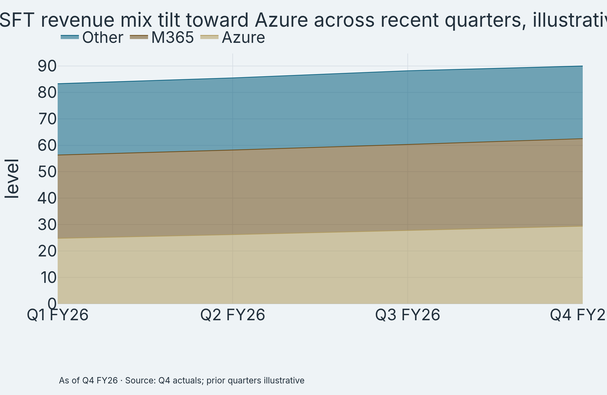
The bull-case AI arithmetic clears with room to spare. Exhibit 13 bridges an illustrative ~USD 13.1B AI revenue increment over twelve months. M365 Copilot adds +USD 3.6B (15M toward 25M seats at USD 30). GitHub adds +USD 0.5B. Azure AI adds +USD 9.0B at +30% growth. Against a ~USD 330B revenue base that is ~4.0pp of growth. That is roughly one-quarter to one-third of total growth if Microsoft grows 14–17%. Halve Azure AI growth to +15% and the increment still adds ~USD 8.6B, or ~2.6pp. Every leg is labeled estimate except seat counts and the price point. The read is that AI math works even under haircuts. Bottom line: hype dies here, arithmetic survives.
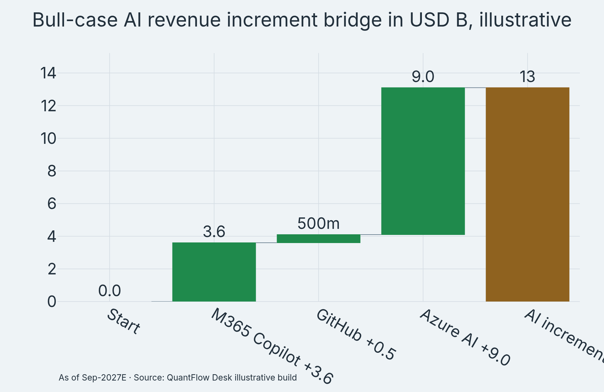
Disclosure quality is the honest discount. Microsoft reports no GAAP Copilot line and no Azure-AI split. Coverage confirmed the non-disclosure as recently as July 2025. Third-party builds (46M seats, ~USD 16B at list, Aug 2026) are estimates, not company disclosure. This report does not rely on them. GitHub’s 4.7M paid subscriptions (~USD 1B ARR, Jan–Aug 2026) are disclosed and usable. The OpenAI relationship contributes ~USD 24.1B of FY26 revenue, but that is mostly consumption gross rather than profit. So what: discount Microsoft’s AI multiple modestly versus names with cleaner segment mapping, and demand better disclosure at each print.
Peer AI lines put Microsoft’s disclosure gap in context. NVDA’s ~USD 81B quarter (Q2 2026) maps almost entirely to AI compute. Google Cloud grew 50%+ off its Q1 2026 base within Alphabet’s USD 107B quarter. AMZN’s custom AI chip business runs above USD 20B annualized with triple-digit growth (Jun 2026). META’s USD 56.3B quarter (+33% y/y, Q1 2026) shows AI-lifted ad monetization. Microsoft’s AI business runs above USD 37B annualized without a clean segment home. Its monetization spreads across cloud and seats, which diversifies the bet and muddies the proof. Bottom line: diversified AI revenue is harder to discount and harder to verify.
Demand deep dive
Cloud demand is concentrated but deep. Exhibit 14 treemaps Q1 2026 hyperscale shares: AWS ~29.5%, Azure ~22.5%, GCP ~13.5%, with Oracle, Alibaba, and others splitting the rest. Microsoft is a clear second. It trails AWS by ~7pp and leads GCP by ~9pp. The strategic read is funnel control. No peer pairs a 450M-seat commercial base with a number-two cloud. GCP growing faster off a smaller base is the genuine share risk. Oracle’s database-tied workloads are a niche threat. The implication is that Azure’s +43% on a USD 100B+ base is the highest-quality growth in hyperscale. Bottom line: scale plus growth is rare, and MSFT has both.
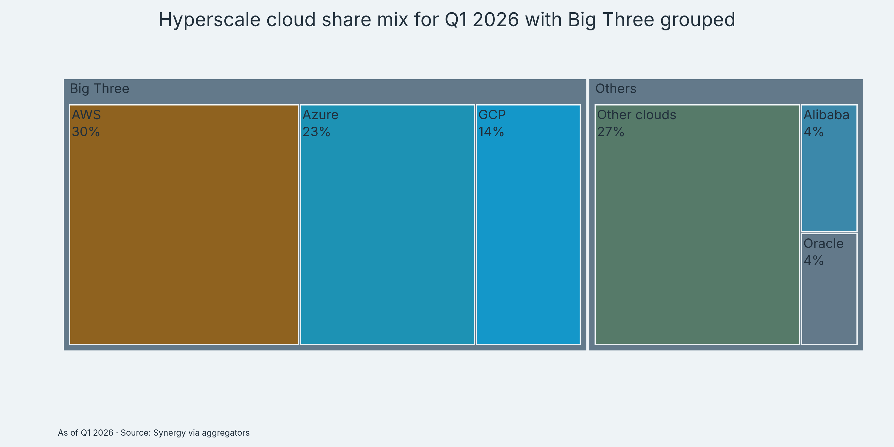
Backlog is the demand anchor. Commercial RPO of USD 678B (+84% y/y) in Q4 FY26 followed USD 627B (+99% y/y) in Q3. Contracted demand grows ~3x reported cloud revenue growth. RPO stands near 2.0x FY26 revenue of USD 331.8B. That is multi-year visibility by any standard. Ex-OpenAI RPO grew 25% while OpenAI concentration eased from ~45% (Q2) toward ~32% (Q4). The cleaner read uses ex-OpenAI: still superb, less concentrated. So what: FY27 revenue has a contracted floor even if new bookings cool.
Copilot TAM is seats times price times penetration, and each leg is sourced. The commercial base exceeds 450M seats (Jan 2026) growing ~6% y/y. List price is USD 30 per user per month at enterprise tiers. Current penetration near 6–7% sits just below the bear case. The ladder below frames conversion. Conversion velocity, not list price, is the entire twelve-month demand question.
| Case | Penetration | TAM USD B |
|---|---|---|
| Bear | 10% | 16.2 |
| Base | 20% | 32.4 |
| Bull | 35% | 56.7 |
Base case (20%, ~90M seats, USD 32.4B TAM) needs ~3x seat scale from today’s 30M. That is aggressive but consistent with net adds doubling quarter on quarter. At USD 30, each point of penetration is worth ~USD 1.7B of ARR. Fifteen points of penetration gain is ~USD 25B of ARR mathematics. Realized collection will trail list, so haircut accordingly. The read is that conversion pays for the data-center bill if velocity holds. Bottom line: seats are the swing asset of FY27.
Capacity is the binding constraint either way. Demand exceeds supply. Microsoft is reportedly turning away AI business (Sep 2026). FY27 recognition pace tracks gigawatt delivery, with 88 datacenters added in FY26 plus ~1 GW in Q4. Memory and GPU cost inflation threatens margin even as delayed revenue protects the top line. Capex near USD 29B per quarter is the toll for converting USD 678B of backlog. If capacity lands on schedule, backlog becomes revenue. If it slips, growth defers rather than destroys. So what: demand is proven, delivery is the swing factor.
Bull vs bear adjudication
The bull case (independent brief, conviction 65/100) runs through guided acceleration. Azure printed +43% in Q4 FY26 and guides +44–45% cc for Q1 FY27. Growth still rises rather than crests. RPO of USD 678B converts mechanically. Even partial conversion supports high-teens FY27 revenue growth. Copilot seats effectively doubled from 15M to 30M+ in two quarters, with large-customer counts up ~7x. Forward P/E near 21.1x (11 Sep 2026) sits below this report’s 26.7x base-case NTM framing. The re-rate path to USD 700 needs only a return to multiples Microsoft already held at similar Azure growth. The bull confirms over the next two prints. Azure must hold ≥45% cc, seats must pass 40M, RPO must hold above USD 700B, and FCF must inflect. So what: the bull is operational before it is multiple-driven.
The bear case was steelmanned in-house. The delegated bear track exhausted its turn budget with no usable result, disclosed here rather than hidden. Its strongest legs all ground in Phase 1 evidence. Capex of USD 41B in Q4 with FCF −23% y/y asks when concrete turns to cash. Copilot has no GAAP revenue line, so the market prices an estimate stack that could disappoint on renewal or attach. OpenAI concentration (~32% of RPO, USD 24.1B of FY26 revenue, ~USD 228B unrealized stake value) is a single-customer and single-model risk. GCP outgrows Azure off a smaller base while software multiples compress (IGV −8.7% over twelve months). At 10-year ~4.96% with hawkish tail risk, a 26–30x multiple has no shelter. The bear activates on specifics. Azure under 40% cc twice, seats stalled under 35M by mid-2027, sequential RPO decline, or FCF down 20%+ for three quarters running. Bottom line: the bear is a conversion-and-cash story, and it deserves respect.
The verdict keeps the overweight but prices the bear’s warning. Four claims were demoted out of thesis math during review. GCP’s supposed +63% quarter came from conflicting low-authority secondaries — use Alphabet’s 10-Q only. The third-party Copilot USD 16B list-price build is unverified company disclosure and stays out of numbers. September hike chatter is sentiment, not a priced forecast. The Azure-AI share of Azure and any Copilot GAAP figure remain undisclosed and are flagged, not asserted. Nothing material from the bull brief was demoted. Seat velocity, RPO scale, and guided acceleration all trace to dated company-adjacent sources. The read is that the bull survives cross-examination with its core intact. So what: overweight with eyes open, sized for the capex tail.
| Demoted claim | Reason | Treatment |
|---|---|---|
| GCP +63% | Conflicted srcs | 10-Q only |
| Copilot 16B | Third-party est | Excluded |
| Sep hike odds | Unverified | Sentiment |
| Azure-AI split | Undisclosed | Flagged |
Scenarios and valuation
Paths fan from USD 492.44 to three checkable endpoints. Exhibit 15 draws monthly scenario trajectories to September 2027. Bear decay reaches USD 400, base compounding reaches USD 575, and bull acceleration reaches USD 700. The fan is desk-authored from scenario growth and multiple assumptions, not a stochastic model. Read it as arithmetic made visible. Base needs Azure in the low-30s cc with Copilot near ~20% penetration and a 28–31x NTM multiple on USD 21.5 EPS. Bull needs Azure at 36%+ cc plus 10-year relief toward 4% and 33–36x. Bear needs retrenchment plus 22–24x. The implication is that multiple and growth contribute roughly equally across scenarios. Bottom line: the chart is the valuation, compressed to one page.
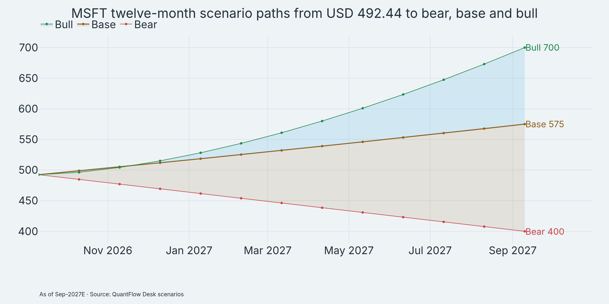
| Case | Target USD | Return % | Azure cc | NTM P/E |
|---|---|---|---|---|
| Bear 30% | 400 | −18.8 | 25–27% | 22–24x |
| Base 50% | 575 | +16.8 | 32–34% | 28–31x |
| Bull 20% | 700 | +42.1 | 36%+ | 33–36x |
Expected value near USD 548 (+11.2%) clears a hold by a wide margin. Base USD 575 pays 26.7x FY27E EPS of USD 21.5. That implies ~18% EPS growth on ~40% incremental margins. Demanding but matched to guided Azure. Bear USD 400 implies ~22–24x on retrenched ~USD 17–18 EPS, the standard growth-scare haircut. Bull USD 700 needs ~33–36x on ~USD 20–21 NTM EPS plus rate relief. That revisits multiples held when Azure last grew mid-40s. Valuation anchors to cash conversion. FCF inflection validates base, while persistent FCF decline validates bear. So what: the scenarios are falsifiable within two quarters.
Risk and sizing
Loss profile is equity-normal with upside skew, so size it like growth rather than a bond. Exhibit 16 boxes six-month daily return distributions for seven mega-cap names as of 10 Sep 2026. MSFT’s box sits centered with a long upside whisker. Median daily moves are tame while Azure-print gaps stretch the top tail. ORCL’s box skews heavy-downside, which is what a broken thesis looks like in this encoding. MSFT shows no such deformation. The implication is that stop discipline should key off weekly closes (USD 460 trend support), not daily 2% noise. Bottom line: the distribution charges no fear premium today.
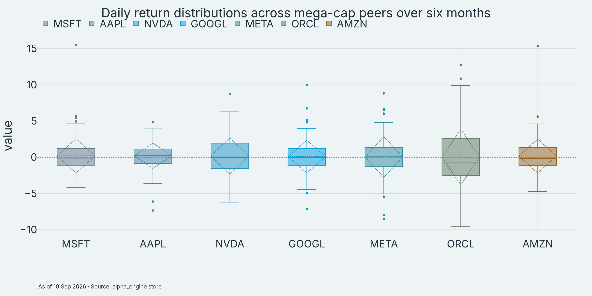
Position guidance for a 12-month research sleeve (research, not advice): 2–3% starter with adds in the USD 460–470 zone. Review fully on a weekly close below USD 440. Binary-event tails (October and January prints, September FOMC) argue for staging rather than rushing. Seed half before the FOMC and add on Azure confirmation. Single-name cap holds at 5%. Mega-cap growth factor budget is respected via the 0.95 market beta. Volatility contribution at 41.6% realized vol on a 2.5% weight runs ~1pp of portfolio vol. That is affordable carry for +16.8% base upside. Key mitigant: backlog visibility (RPO ~2x revenue) shortens the fundamental blind period. The read is starter-plus-adds, never a full weight into the print. So what: structure buys the optionality that the multiple may not.
What breaks the thesis is specific and dated. Azure cc below 40% for two consecutive prints ends the acceleration story. Copilot seats under 35M by mid-2027 ends the conversion story. Sequential RPO decline ends the backlog story. FCF down 20%+ for three quarters with capex still rising ends the ROI story. A 10-year above 5.5% compresses any 26x multiple regardless of growth. Each tripwire carries a print date. That is what makes this overweight accountable. Bottom line: five lines, five exits, no ambiguity.
Recommendation and appendix
We recommend an OVERWEIGHT stance on MSFT for the twelve months to ~11 Sep 2027. Target USD 575 (+16.8% from USD 492.44, 10 Sep 2026). Bear USD 400 (30%) and bull USD 700 (20%) frame skewed upside. Fund a 2–3% position by seeding now and adding USD 460–470. Review fully below USD 440 weekly. The call rests on three contracted facts. Azure grew +43% and guides +44–45% cc. RPO stands at USD 678B (+84%). Copilot passed 30M+ seats at USD 30. Against them sits one watched risk: USD 41B quarterly capex with FCF −23%. If October confirms acceleration with FCF stabilizing, press toward bull sizing. If Azure slips under 40% or RPO rolls, cut to the bear math without nostalgia. This is research, not advice. Verify every number against primaries before committing capital. The final read is that Microsoft pairs the strongest AI backlog in mega-cap with a laggard tape, and that combination is what pays.
Evidence provenance and gaps, stated plainly. Phase 1 ran eight tracks on 11 Sep 2026: quant, tape, catalysts, earnings, sector, macro, AI-monetization, and demand. The independent bull brief completed (conviction 65/100). The delegated bear track exhausted its turn budget with no usable result, so the bear case above was steelmanned in-house from Phase 1 evidence and labeled as such. Web-fetch returned 401 on direct page pulls, so web evidence rests on search-sourced dated recaps plus engine-verified prices. Primary filings (FY26 10-K, Q4 press release, call transcript) should be pulled before any paid-client distribution. Excluded from thesis math as unverified: EPS surprise cents, segment USD splits, buyback-plus-dividend totals, forward multiples, renewal and attach rates, AWS/GCP backlog USD levels, and M365 ARPU in USD. Every number in this report carries its unit and as-of. Anything without both was cut.
| Data | As-of | Status |
|---|---|---|
| MSFT USD 492.44 | 10 Sep 2026 | Engine-ok |
| Peer prices | 10 Sep 2026 | Engine-ok |
| Azure/RPO | Q4 FY26 | Web, dated |
| Copilot seats | Q4 FY26 | Web, dated |
| Funds/10Y | Jul–Sep 2026 | Web, dated |
| Gartner IT | 27 Jul 2026 | Web, dated |
Charts in this report (16 engine-built exhibits, ledger-light theme, export tiers hero 1500x750 / standard 1000x650 / compact 800x520 at scale 2): momentum-vs-volatility scatter, correlation heatmap, factor radar, factor-interval estimates, return dispersion, price technicals, support-resistance levels, seasonality grid, catalyst timeline, peer twelve-month returns, volatility bars, revenue-mix area, AI-increment waterfall, cloud-share treemap, scenario fan, peer distribution boxes. Bar-only figures are 2 of 16 (12.5%). All PNGs carry burned-in as-of and source footers.